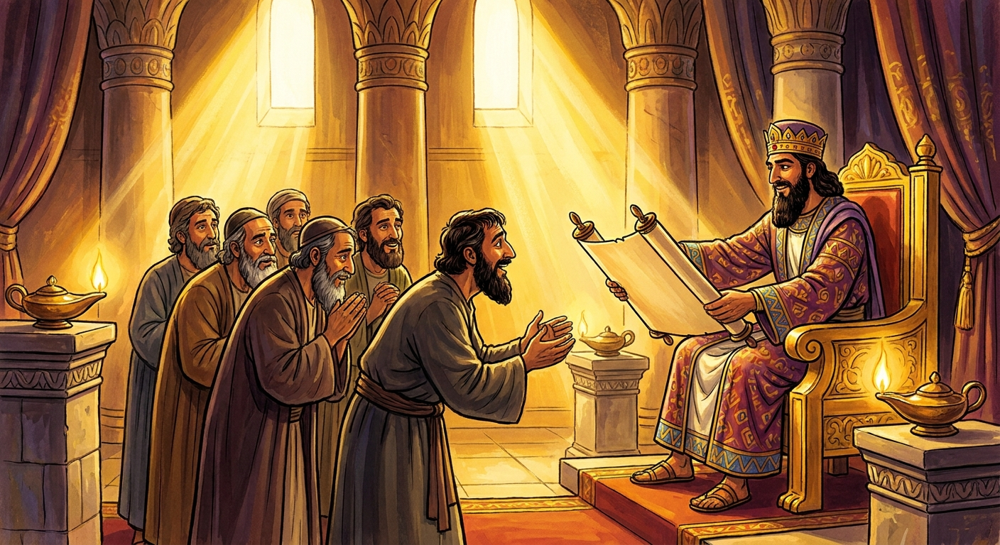
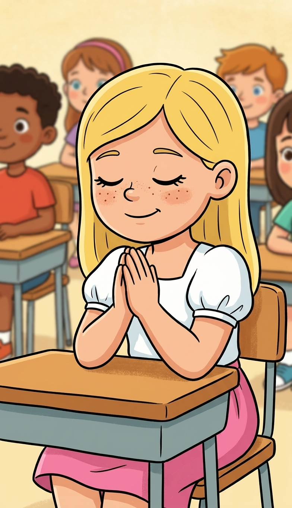
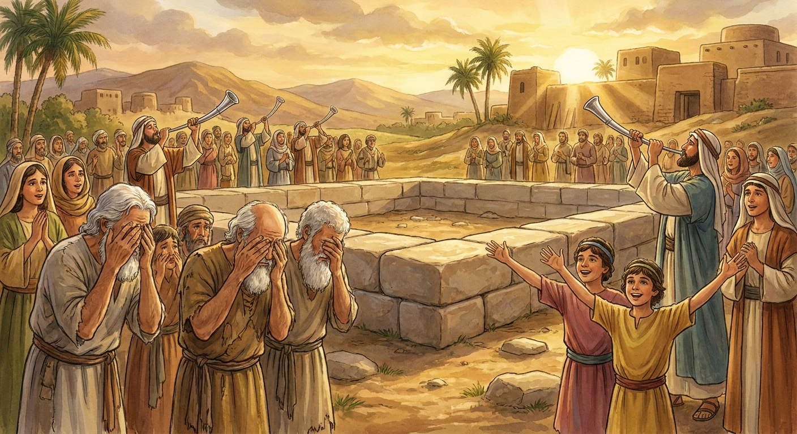
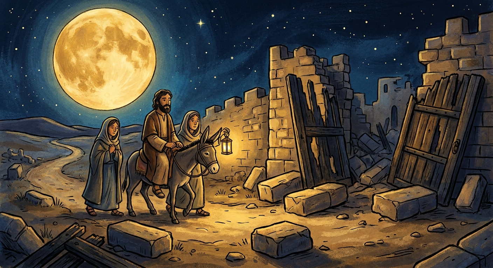
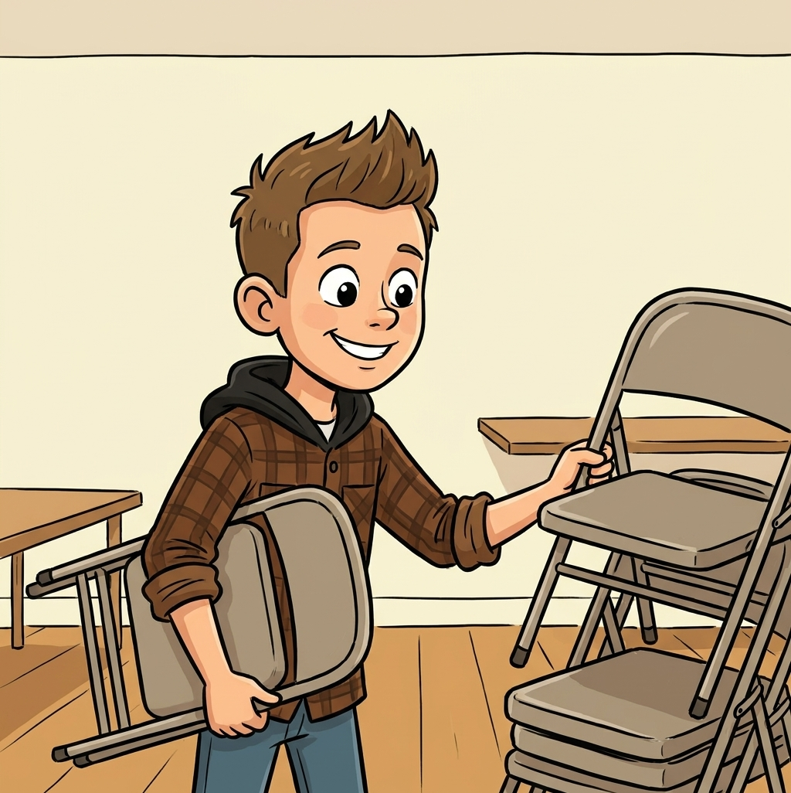
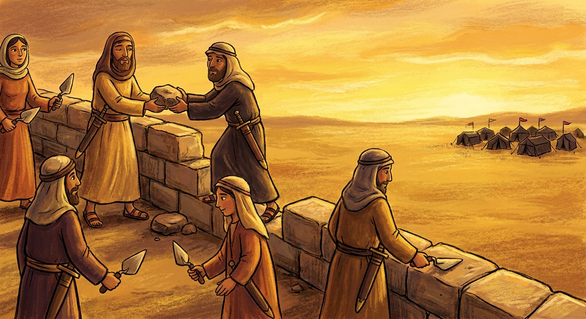
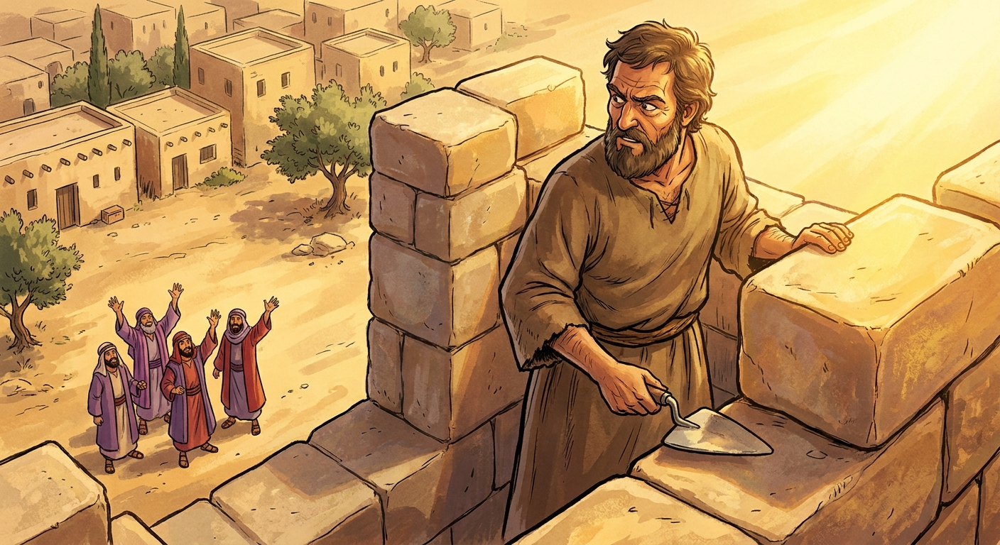
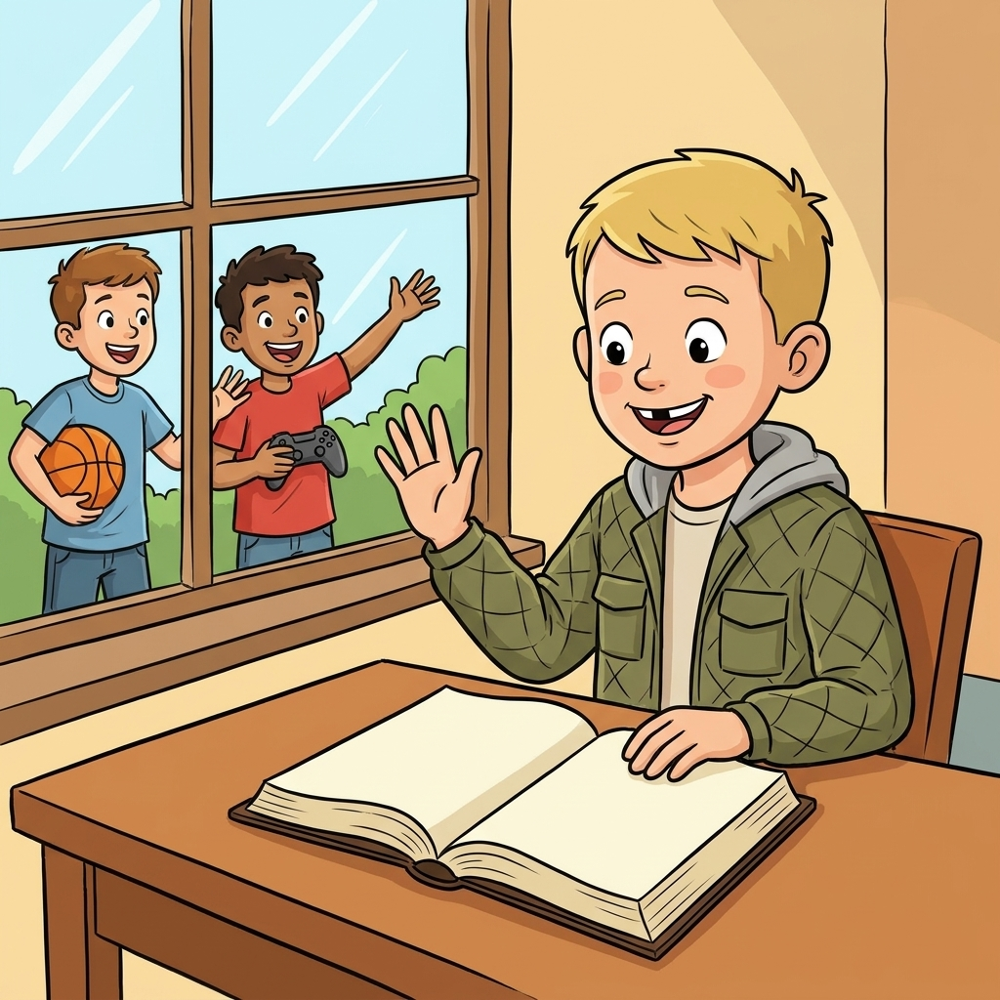
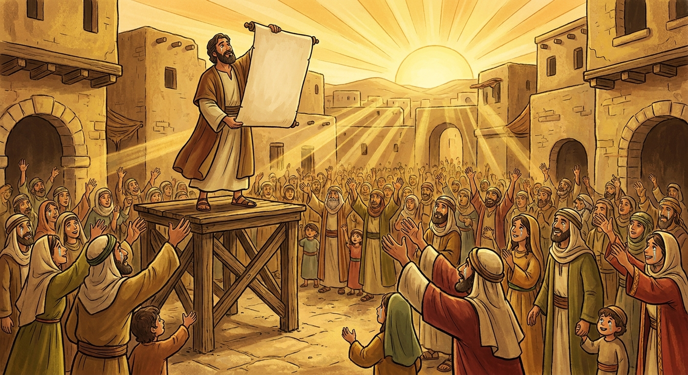
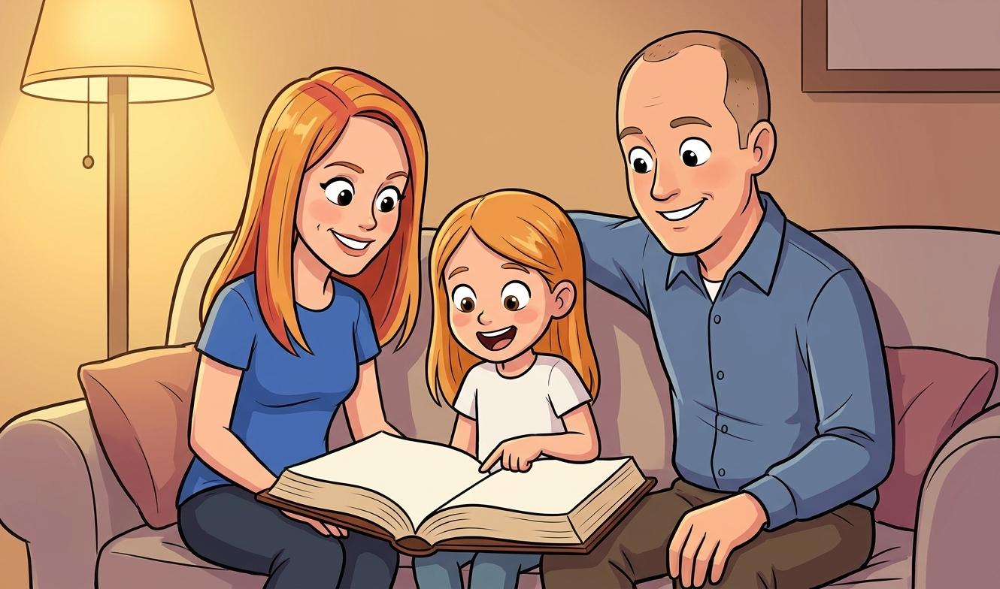

Nehemiah 6:3 · "I am doing a great work, so that I cannot come down: why should the work cease?"
Ezra 1; 3-7; Nehemiah 2; 4-6; 8 · Come Follow Me, July 27 to August 2Primary (9-year-olds), Elk Ridge 15th Ward~28 minNo supplies needed
Objective. The people finally come home, and then they have to rebuild. A foreign king's heart gets changed so they can go. At the temple foundation the cheering and the crying get so loud you cannot tell them apart. Then Nehemiah builds a wall with a trowel in one hand, and when people try four separate times to pull him away from it, he says the line this whole lesson is built on: "I am doing a great work, so that I cannot come down." The kids should walk out able to say: God has a real job for me, I do not have to come down off the wall for every distraction, and the joy of the Lord is my strength. Every principle lands with a cartoon of one of our own class living it out on a normal Tuesday.
↩ Last week / this week
Last week in 2 Chronicles we watched kings of Judah face armies that were way too big for them. This week the worst thing finally happens: Jerusalem falls, the temple is destroyed, and the people are hauled off to Babylon for seventy years. Our lesson picks up on the other side of that. This is the coming home story, and coming home turns out to be a construction project.
Last weekKings of Judah
→
70 yearsBabylon
→
TodayCyrus lets them go
→
TodayTemple rebuilt
→
TodayWall rebuilt
Everything they loved got knocked down. Today they build it back.
01
The story so far (quick review)
~2 min
Warm-up: Let's see what stuck from last week. Tap the answer you think is right.
1. Three armies were marching at Jehoshaphat. Who did he send out in front of his soldiers?
The singers. A choir out in front of an army. And when they began to sing, the Lord fought the battle for them.
2. What did Jehoshaphat pray when he had no idea what to do?
"Our eyes are upon thee." He told God the honest truth: this is too big, I do not know what to do, I am looking at you.
Bridge into today
Those kings kept getting warned, and mostly they did not listen. So eventually the thing God's prophets kept warning about actually happened: Babylon came, Jerusalem fell, the temple was burned, and the people were marched away. Today's story starts seventy years later, with a question: when the thing you love is a pile of rubble, where do you even start?
02
God changes a king's mind
~4 min
Seventy years in Babylon. A whole lifetime. Most of the people alive now had never seen Jerusalem. And then a brand new empire takes over, run by a Persian king named Cyrus (say it: SY-russ), who does not worship the God of Israel and has no reason at all to care about a wrecked little temple far away.
And the scripture says the Lord stirred up his spirit. Cyrus announces, to his whole empire, that the Jews can go home and rebuild the house of the Lord. He even sends back the temple treasure that Babylon stole.

Cyrus hands over the decree. He did not have to. God worked on the heart of a king who did not even know Him.
"The Lord stirred up the spirit of Cyrus king of Persia… Who is there among you of all his people? his God be with him, and let him go up to Jerusalem… and build the house of the Lord God of Israel."
🔎 Focus question
God did not send an army to rescue them. He changed one person's heart. Who is somebody you could pray for, whose heart changing would help a lot? (A friend who is being unkind. A parent. Somebody who does not want to come to church.)
And here is a small thing worth catching. Later on, Nehemiah works for a different Persian king, and the king notices he looks sad and asks why. Nehemiah is about to make the biggest request of his life, and look at what he squeezes in first.
Nehemiah 2:4-5
"Then the king said unto me, For what dost thou make request? So I prayed to the God of heaven. And I said unto the king…"
Ask the class
There was no time to kneel down. The king was standing right there waiting for an answer. So Nehemiah prayed in the middle of the sentence. When could you use a prayer that fast and that quiet? (Before a test. Before you answer someone who is being mean. Right before you have to be brave.)

DannieNehemiah's trick: a prayer so quick and quiet that nobody in the room even knows.
03
The loudest sound in the Old Testament
~4 min
So they go home. And the very first thing they build is not their own houses. It is the altar, and then the foundation of the temple. Priests with silver trumpets, music, the whole crowd there to watch the first stones go down.
And then something strange happens, and it is my favorite verse in the whole lesson. Two completely different sounds go up at the same time. Tap both of them.
Activity · two sounds at once
Who is making which noise?
The foundation is laid. Tap each group to hear what came out of them.
🎉
Shouting for joy
The young people. They had never seen a temple before. This one is theirs.
😢
Weeping out loud
The old men who remembered Solomon's temple. They knew what had been lost.
🔊 Both at once, and nobody could tell them apart
Tap both groups.
"The people could not discern the noise of the shout of joy from the noise of the weeping." Same event. Some people were thrilled and some people were heartbroken, and God did not tell either group they were wrong. The noise was heard far away. Sometimes a good thing and a sad thing happen in the exact same moment, and you are allowed to feel both.

One crowd, two sounds. The cheering and the crying were both about the same pile of stones.
"All the people shouted with a great shout… But many of the priests and Levites and chief of the fathers, who were ancient men, that had seen the first house… wept with a loud voice… so that the people could not discern the noise of the shout of joy from the noise of the weeping of the people."
🔎 Focus question
Have you ever been happy and sad about the same thing at the same time? (Moving. A last day of something. A new baby and a tired house.) Is it okay to bring both of those to Heavenly Father?
It took years, and people tried to stop them, but they finished it. And when the temple was done they threw a party, because a temple is a happy place, not a serious quiet place where you have to whisper.
LexiThey finished the temple and celebrated with joy. Same building, same feeling, 2,500 years later.
Years later, a man named Nehemiah (say it: nee-uh-MY-uh) is living far away, working as the cupbearer for the king of Persia. Good job. Safe job. Then some travelers bring him news from Jerusalem: the temple is standing again, but the city wall is still smashed and the gates are burned. With no wall, the city cannot protect itself and everybody knows it.
Nehemiah sits down and cries. Then he fasts and prays. Then he asks the king for permission to go, and the king says yes. And when he gets to Jerusalem he does not make a big announcement. He goes out at night, quietly, with a few people, and rides the whole broken wall to see exactly how bad it is.

Nobody knew he was out there. He looked at the whole ugly truth first, before he asked anyone to help.
"Ye see the distress that we are in, how Jerusalem lieth waste… come, and let us build up the wall of Jerusalem… And they said, Let us rise up and build. So they strengthened their hands for this good work."
🔎 Focus question
He said "let us build," not "you guys should really fix this." What is the difference between those two sentences? Which one makes you want to help?

Cole"Let us rise up and build." Sometimes the great work is stacking the chairs nobody asked you to stack.
05
Everybody builds
~4 min
Here is the part I love. Nehemiah does not hire professional builders. He gives everybody a section, right in front of their own house, and the scripture lists them by name and by job. Priests. Goldsmiths. Perfume makers. A man named Shallum, working alongside his daughters. None of them were wall experts. They built it anyway.
Tap to lay a stone. Watch what shows up partway through.
Activity · build the wall
Who built it?
Every stone is a real group from Nehemiah 3. Keep laying stones until the wall closes up.
Sanballat and Tobiah, from across the valley
"What do these feeble Jews? … will they revive the stones out of the heaps of the rubbish?" And Tobiah added: "even that which they build, if a fox go up, he shall even break down their stone wall."
0sections built
0days
The wall is rubble. Start building.
Fifty two days. The whole wall, all the way around a city, in under two months, by people whose actual jobs were making perfume and jewelry. And here is the line the enemies could not get around: when they saw it finished, "they perceived that this work was wrought of our God." The mocking never stopped the building. It just made the finished wall louder.
The mocking turned into real threats, so Nehemiah did something strange looking: he told the builders to keep a weapon on them while they worked. Half a hand for building, the other hand guarding.

One hand on the work, one hand on the sword. Nobody got a comfortable day.
"So built we the wall… for the people had a mind to work… every one with one of his hands wrought in the work, and with the other hand held a weapon."
🔎 Focus question
"The people had a mind to work." What does it mean to have a mind to work? (You decided ahead of time. You are not waiting to feel like it.) What is one job at your house that would go way better if you had a mind to work?
ZaleaSanballat's whole strategy was mocking. Notice she does not stop walking to argue with it.
06
"I cannot come down"
~6 min
This is the heart of the lesson. When mocking did not work and threats did not work, Nehemiah's enemies got clever. They stopped attacking and started inviting. Come down off the wall, Nehemiah. Let's meet up and talk. Just for a little while.
It sounds so friendly. It was a trap, and Nehemiah knew it. And the scripture makes a point of telling us they sent that invitation four separate times, and he gave them the same answer every single time.

Four invitations. Four identical answers. He never even walked down to hear them out.
Activity · you are on the wall
Four messages arrive
You are up on the wall with a trowel in your hand and the work is almost done. A messenger shows up. What do you say?
Message 1
"Come, let us meet together in one of the villages in the plain of Ono." Just a friendly chat. Bring nobody.
→ "I am doing a great work, so that I cannot come down."
Message 2
Same invitation, second time. Surely it is rude to keep saying no. Surely you can spare an afternoon.
→ "I am doing a great work, so that I cannot come down."
Message 3
Third time. Now with a warning: people are saying things about you, and you should really come down and defend yourself.
→ "I am doing a great work, so that I cannot come down."
Message 4
Fourth time, and this one comes as an open letter for everyone to read, full of things that are not true about you.
→ "I am doing a great work, so that I cannot come down."
A messenger is waiting. Pick your answer.
Four times, same answer, and the wall got finished. Look closely at what he actually said: not "you are bad people," not "I do not want to," but "why should the work cease?" He was not being rude. He was busy. He knew what he was building, so a decision that would be hard for most people was easy for him. He had already made it.
"And I sent messengers unto them, saying, I am doing a great work, so that I cannot come down: why should the work cease, whilst I leave it, and come down to you? Yet they sent unto me four times after this sort; and I answered them after the same manner."
🔎 Focus question
What are the things that try to get you to come down off the wall? (A screen. "Just one more episode." Somebody trying to get you to be mean with them.) Notice they usually do not feel like attacks. They feel like invitations.

Braxton"Why should the work cease?" He is not mad at them. He is just not done yet.
✊ Object lesson · nothing to bring
The wall drill
This one is loud and the kids will want to do it more than once, which is fine, because the whole point is repeating the same answer until it is automatic.
You'll need
Nothing. One volunteer, the rest of the class, and their voices.
How to run it: One kid stands in the middle and starts "building": both arms out, stacking invisible stones, and they have to keep stacking the whole time. Everybody else is Sanballat. Go around the circle and each kid calls out one tempting invitation to come down, and make it a good one, the stuff that actually works on a 9-year-old: "there is a trampoline out here," "your friends are all leaving," "you can finish it later," "somebody said something mean about you." Every single time, the builder has to answer out loud: "I am doing a great work, so I cannot come down." Do not let them just nod. Then swap the builder and go again so more than one kid gets to say it. Finish by asking: did it get easier to say each time? That is exactly why Nehemiah could answer the fourth message as fast as the first one. He had already decided.
"This work is not yours and mine alone. It is the Lord's work, and when we are on the Lord's errand, we are entitled to the Lord's help."
President Thomas S. Monson
07
The whole city sits down to listen
~3 min
The wall is finished. So what does a whole city do to celebrate? They ask for the scriptures. All of them, together, in the street, and they specifically ask Ezra to bring out the book of the law and read it to them.
He reads from early morning until midday. That is hours. And nobody wanders off. Little kids are there. And the Levites walked around helping people understand the parts that were confusing, which is basically the first Sunday school class in the Bible.

Hours of scripture reading, standing up, outdoors, on purpose, because they asked for it.
Activity · do what they did
Act out Nehemiah 8
The crowd did five things while the word of God was read. Tap each one and everybody actually do it.
🧍
Stand up
Neh 8:5
"When he opened it, all the people stood up."
🙌
Lift your hands
Neh 8:6
"All the people answered, Amen, Amen, with lifting up their hands."
🙇
Bow your head
Neh 8:6
"And they bowed their heads, and worshipped the Lord with their faces to the ground."
😢
Cry a little
Neh 8:9
"For all the people wept, when they heard the words of the law."
🎉
Celebrate
Neh 8:12
"And all the people went their way to eat, and to drink, and to send portions, and to make great mirth."
0 of 5 done. Everybody up.
They stood, lifted their hands, bowed, cried, and then threw a feast. All of that from reading. And when the people started crying because they realized how far off they had gotten, Nehemiah did not pile on. He told them to stop being sad and go eat something good, because this day was holy. Then he gave them the sentence to take home.
"So they read in the book in the law of God distinctly, and gave the sense, and caused them to understand the reading… neither be ye sorry; for the joy of the Lord is your strength."
🔎 Focus question
"The joy of the Lord is your strength." Not your reward, not your treat when the work is done. Your strength, the thing that lets you keep building. Where do you think that joy comes from on a hard day?

AlydaThey asked for the scriptures to be read to them. You can ask for that at your house tonight.
08
Take it home
~2 min
God has a great work for you. Not someday when you are grown. The wall got built by perfume makers and goldsmiths and a dad working next to his daughters. You already qualify.
Learn Nehemiah's line. When something tries to pull you off your wall, and it will usually sound friendly, you have a sentence ready: "I am doing a great work, so I cannot come down."
Ask for stronger hands. Not for a smaller job. Nehemiah prayed "strengthen my hands" and then kept building with a sword in the other one.
Pray fast when you have to. Nehemiah prayed in the middle of a sentence with a king staring at him. You can do that in a hallway, on a field, anywhere.
The joy of the Lord is your strength. Not the prize at the end. The fuel for the middle.
Brief testimony: the Lord rebuilds things. Temples, walls, families, and people. And He almost always does it by inviting ordinary people to pick up a stone. Close with prayer.